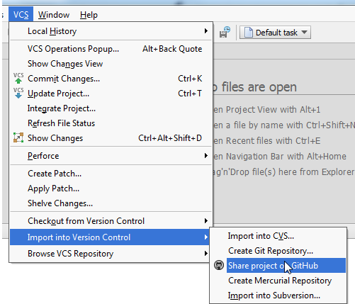
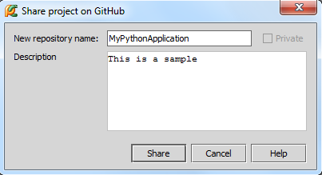
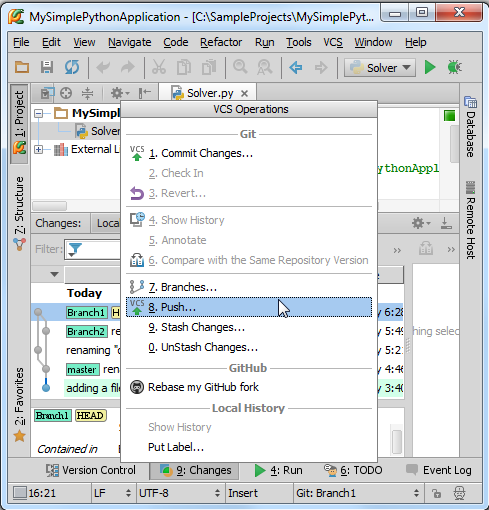
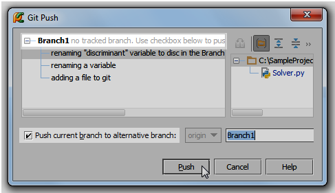
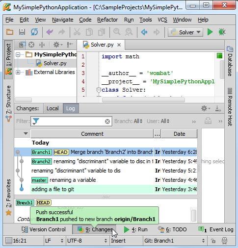

1、主题
介绍如何通过GitHub共享你的本地Git版本库
2、准备工作
（1）Pycharm版本为2.7或者更高
（2）Git以及GitHub可用
（3）有GitHub storage的读写权限，因此需要先创建一个账号以及远程版本库
（4）在 "Using PyCharm's Git integration locally"教程基础上
3、分享源码的两个方式
4、在GitHub上分享
单击VCS→Import into Version Control→Share project on GitHub主菜单命令：

如果你已经配置好的Github账户，其将会显示在下面列表中，对其命名以及进行简要说明：

单击Share，共享完成。
5、源码推送
按下Alt+`，在弹出窗口中按下8来调用Push命令：

在Git Push对话框中，选择待推送的版本，在做分支的首次推送时，需要勾选相应的复选框：

推送过程中Pycharm会给出相关提示球：

推送完成。